Introduction
Harry Potter is a series of seven fantasy novels written by British author J. K. Rowling. The novels chronicle the lives of a young wizard, Harry Potter, and his friends Hermione Granger and Ron Weasley, all of whom are students at Hogwarts School of Witchcraft and Wizardry. The main story arc concerns Harry's struggle against Lord Voldemort, a dark wizard who intends to become immortal, overthrow the wizard governing body known as the Ministry of Magic and subjugate all wizards and Muggles (non-magical people).
Harry's Characteristics
- Humble
- Brave
- Loyal
- Clever
- Powerful
Potter's Friends
- 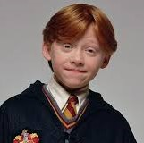 Ron Weasley
- 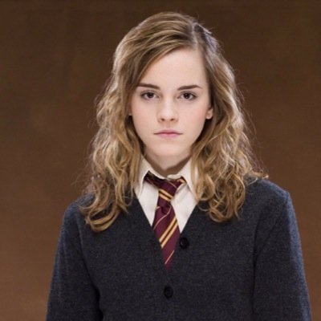 Hermione Granger
- 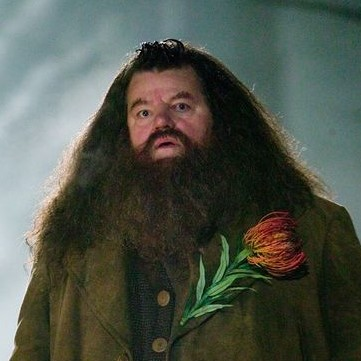 Rubeus Hagrid
- 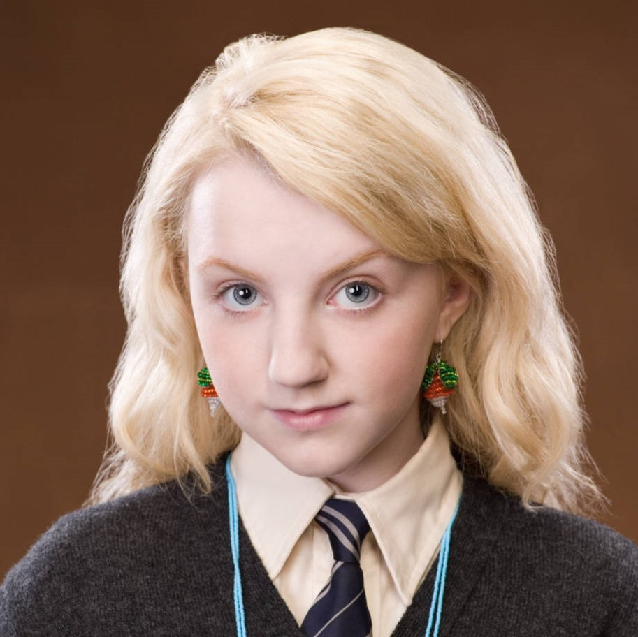 Luna Lovegood
- 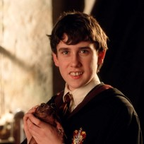 Neville Longbottom
- 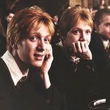 Fred And George Weasley
- 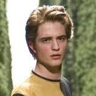 Cedric Diggory
- 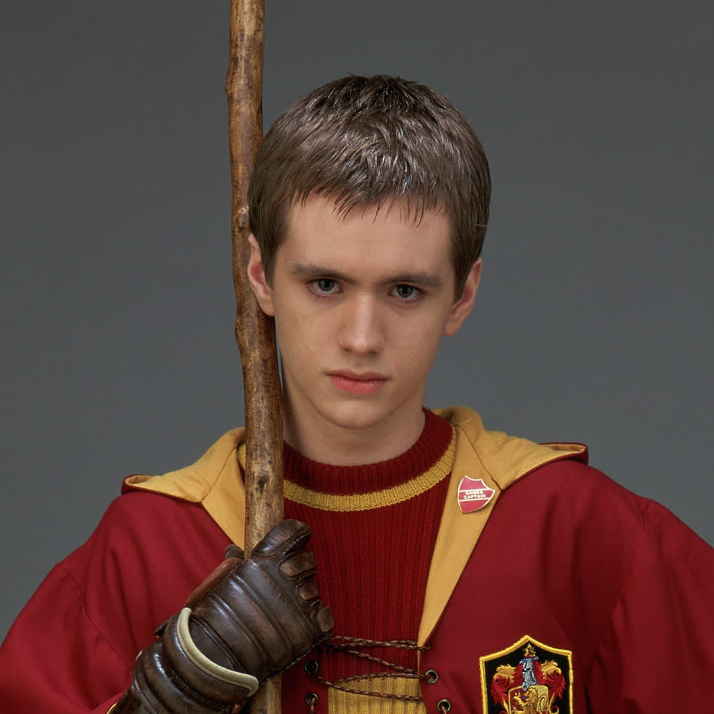 Oliver Wood
- 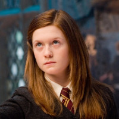 Ginny Weasley
- 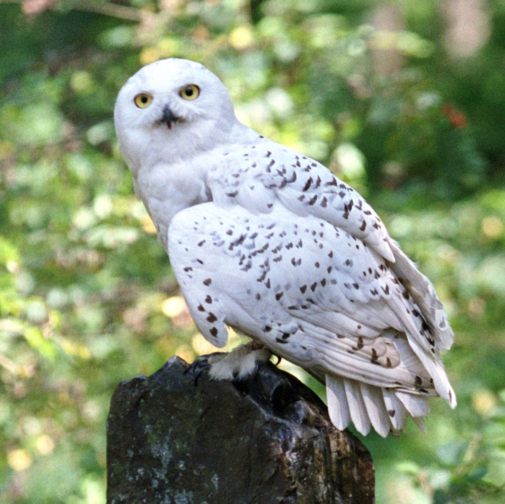 Hedwig
Enemy of Harry Potter
Tom Marvolo Riddle later known as Lord Voldemort or, alternatively as You-Know-Who, the Dark Lord, or He-Who-Must-Not-Be-Named was the enemy of Harry Potter
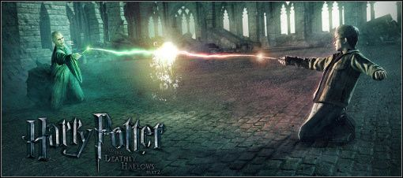A Picture Showing A Fight Between Voldemort & Harry Potter